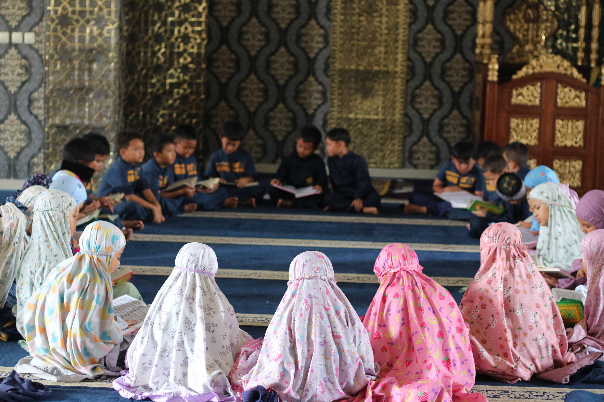
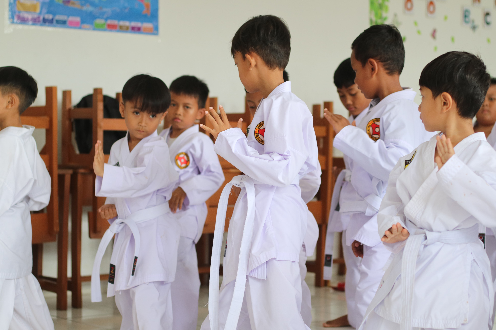
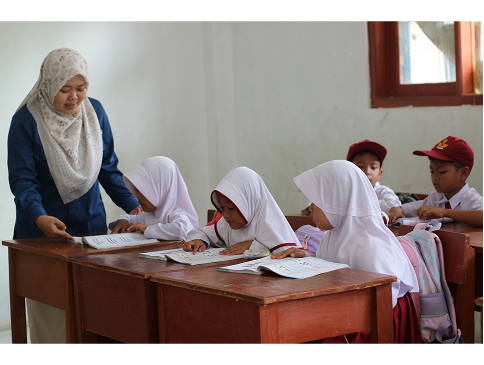
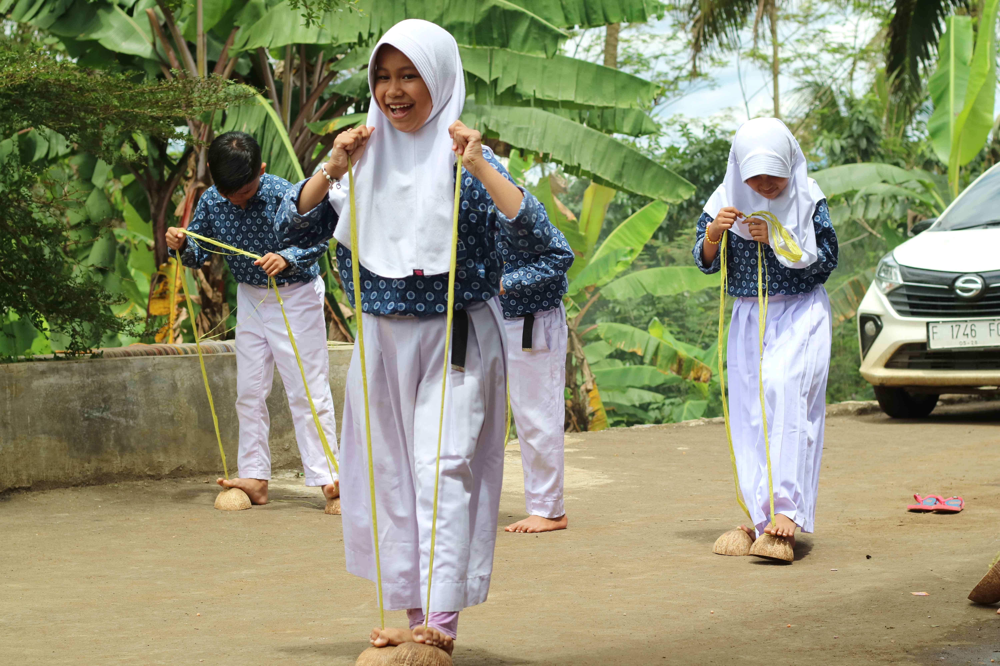

Tahun Pelajaran 2025 / 2026
Selamat Datang di
SD Islam Terpadu Al-Hasan
Mencetak generasi Islami yang cerdas, berakhlak mulia, dan berdaya saing di era global.




Keunggulan
Mengapa SDIT Al-Hasan?
Guru Berkualitas
Tenaga pendidik bersertifikat dengan metode pengajaran aktif dan inovatif sesuai Kurikulum Merdeka.
Kurikulum Islami
Integrasi nilai-nilai Islam dalam setiap mata pelajaran, hafalan Al-Qur'an, dan pembiasaan akhlak mulia.
Akademik Unggul
Prestasi akademik dan non-akademik tingkat kecamatan hingga provinsi setiap tahunnya.
Kegiatan Terstruktur
Ekstrakurikuler beragam: pramuka, seni, olahraga, dan program tahfidz intensif.
Lingkungan Aman
Lingkungan sekolah bersih dan kondusif dengan pengawasan keamanan penuh.
Komunikasi Aktif
Portal nilai online, grup kelas, dan pertemuan orang tua rutin setiap semester.
Galeri
Momen Bersama
Kegiatan Upacara Bendera
Pembelajaran di Kelas
Lomba Olahraga
Program Tahfidz
Pameran Seni Siswa
Wisuda Tahfidz
Informasi Terkini
Berita & Pengumuman
📋
Pengumuman
08 April 2026
Hasil STS Semester 2 Sudah Dapat Dilihat di Portal Nilai
🏆
Prestasi
02 April 2026
Siswa SDIT Al-Hasan Raih Juara 2 Lomba MTQ Tingkat Kecamatan
📝
Penting
28 Maret 2026
Pendaftaran SPMB Tahun Ajaran 2026/2027 Resmi Dibuka